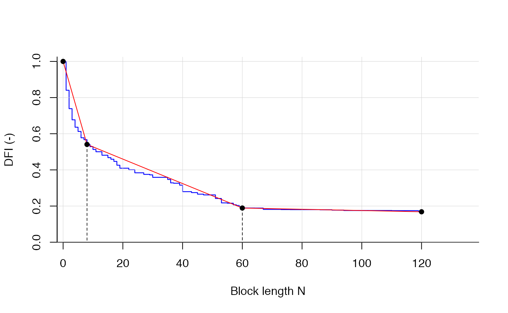

Estimates n breakpoints in the DFI curve.
DFI values are compared against n+1 piecewise linear segments and the minimization of the
residuals (between linear segments and DFI curve). Several parameters can be customized.
If q_obs is given in daily temporal resolution then also n can be interpreted as delay in days
for different contributions (default).
find_bps( dfi, n_bp = 2, bp_mingap = 5, bp_min = 0, bp_max = length(dfi) - 1, nmax = length(dfi), of_weights = c(0.5, 0.5), desc = TRUE, print = FALSE, plotting = FALSE, experimental = FALSE )
| dfi | numeric, a vector with the DFI values between 1 and 0, dummy data dfi_example can be used. |
|---|---|
| n_bp | numeric, How many breakpoints (1, 2, 3) should be estimated (default = 2)? If |
| bp_mingap | numeric, smallest interval between two breakpoints (default = 5). |
| bp_min | numeric, |
| bp_max | numeric, |
| nmax | numeric parameter to truncate the tailing of the CDC (i.e. the length of |
| of_weights | vector with two elements, first is weight of the RMSE, second is weight of the MAE.
Default is c(0.5, 0.5), i.e. equal weights. Sum of vector must be 1. To switch of one measure use
|
| desc | logical, if |
logical, if |
|
| plotting | logical, if |
| experimental | logical, if |
Returns a list with 3 elements.
estimates for the n breakpoints with names bp_n
value of the objective function, default:
OF = 1/2 RMSE + 1/2 MAE,
where OF is to be minimized.
Relative streamflow contributions between bp_min, the breakpoints and bp_max,
e.g. 2 breakpoints lead to 3 relative contributions, 3 breakpoints lead to 4 relative contributions.
The first rel_contr-value is the fastest contribution to streamflow, the last rel_contr-value
is the slowest contribution to streamflow. All contributions add up to 1.
Stoelzle, M., Schuetz, T., Weiler, M., Stahl, K., & Tallaksen, L. M. (2020). Beyond binary baseflow separation: a delayed-flow index for multiple streamflow contributions. Hydrology and Earth System Sciences, 24(2), 849-867.
# use dfi_example as an DFI vector with 121 values find_bps(dfi_example, n_bp = 3, bp_max = 90, plotting = TRUE)#> Calculating breakpoints...Done. #>#> $bps_position #> bp_1 bp_2 bp_3 #> 4 18 60 #> #> $bias #> [1] 0.01066672 #> #> $rel_contr #> contr_1 contr_2 contr_3 contr_4 #> 0.3638711 0.2101886 0.2368266 0.1891137 #>